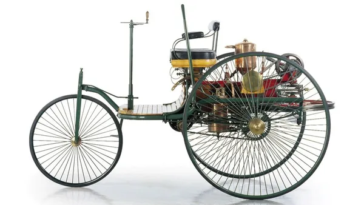

Sua historia na formula 1.
A Mercedes-Benz tem uma longa e bem-sucedida história na Fórmula 1. Começou a competir no Campeonato Europeu antes da Segunda Guerra Mundial, conquistando três títulos. A estreia na Fórmula 1 foi em 1954, com uma vitória no Grande Prêmio da França e o piloto Juan Manuel Fangio conquistando o Campeonato de Pilotos de 1954 e 1955. Após a tragédia de Le Mans em 1955, a Mercedes-Benz se retirou do automobilismo até 1994, quando retornou como fornecedor de motores em parceria com a Ilmor. Em 2010, a Mercedes retornou como equipe própria após quinze anos de parceria com a McLaren. Desde então, tornou-se uma das equipes mais bem-sucedidas da história da Fórmula 1, conquistando campeonatos consecutivos de pilotos e construtores entre 2014 e 2020. No Brasil, a Mercedes tem uma base sólida de fãs que acompanham avidamente as corridas da Fórmula 1.
Nossa historia Sobre noscuidando de voce e de seu carro ate o ultimo detalhe
A oficina da Mercedes é um lugar onde os clientes podem encontrar qualidade, eficiência e confiança na manutenção de seus veículos. A oficina conta com profissionais qualificados, equipamentos modernos e peças originais da marca, garantindo um serviço de excelência e satisfação. A oficina da Mercedes também oferece facilidades como agendamento online, orçamento transparente e garantia de um ano nas peças e serviços realizados. A oficina da Mercedes é mais do que uma oficina, é uma parceira dos clientes que valorizam o conforto, a segurança e a performance de seus carros.
Possíveis manutenções
- Troca de óleo
- Alinhamento
- Teste de bateria
- Troca de pneus
- Discos de freio
- Lâmpadas
- Velas de ignição
- Filtro de combustível
- Filtro de ar do motor
- Óleo e filtro de óleo do motor
Venha nos conhecer
Somos a Décima quarta marca de de carros mais vendida no Brasil alem de oferecermos uma ampla gama de veículos, incluindo hatchbacks, sedãs, cupês, cabriolets, roadsters e SUVs1. Além disso, a Mercedes-Benz Brasil oferece uma garantia de fábrica de 3 anos sem limite de quilometragem1
Desde o seu primeiro automóvel, a Mercedes-Benz tem sido uma pioneira na indústria automobilística. Cada carro que sai de suas linhas de produção é um testemunho de sua promessa de qualidade e inovação. Seja o elegante Classe S, o robusto Classe G ou o futurista EQC, cada modelo é projetado com precisão meticulosa e atenção aos detalhes. A Mercedes-Benz não é apenas uma fabricante de carros, ela é uma marca que representa status e sucesso. Possuir um Mercedes-Benz não é apenas possuir um carro, mas um pedaço da história automotiva. Além disso, a Mercedes-Benz está na vanguarda da tecnologia verde com sua linha EQ. Estes veículos elétricos não só têm um desempenho impressionante, mas também são amigáveis ao meio ambiente.
Sobre a Mercedes
Início (1886):
Gottlieb Daimler e Carl Benz, na Alemanha, construíram paralelamente os primeiros automóveis motorizados do mundo.
Primeiro Ônibus, Caminhão a Gasolina e Diesel (1895-1896):
Eles foram pioneiros e colecionaram várias conquistas, como a construção do primeiro ônibus, do primeiro caminhão com motor a gasolina e do primeiro caminhão a diesel do mundo.
Acordo com Emil Jellinek (1900)
Em abril de 1900, Emil Jellinek e a DMG assinaram um acordo de distribuição de veículos e motores.
Primeiro “Mercedes” (1900):
O primeiro dos veículos com o novo motor, um carro de competição com 36 HP, foi entregue em dezembro de 1900 a Jellinek.
Símbolo da Mercedes-Benz (1909):
O mundialmente famoso símbolo da Mercedes-Benz teve um início profético.
União de Daimler e Benz (1926):
Em 1926, com a instabilidade econômica sofrida pela indústria de automóveis após a Primeira Guerra Mundial, Daimler e Benz resolveram unir suas forças. Assim nasceu oficialmente a Mercedes-Benz.
Nossa historia
l. A história da Mercedes-Benz começou há mais de um século na Alemanha, com os pioneiros Gottlieb Daimler e Carl Benz construindo paralelamente os primeiros automóveis motorizados do mundo1. Em abril de 1900, Emil Jellinek e a DMG assinaram um acordo de distribuição de veículos e motores. Logo de início, foi acertado o desenvolvimento de uma nova forma de motor que deveria levar o nome "Daimler-Mercedes
Primeira Mercedes
Um pouco mais sobre nossa historia
No Brasil, a Mercedes-Benz tem desempenhado um papel crucial no desenvolvimento do setor automotivo. A empresa oferece uma ampla gama de veículos, incluindo carros de passeio, ônibus e caminhões. Além disso, a Mercedes-Benz tem investido fortemente em tecnologias sustentáveis e inovadoras, contribuindo para um futuro mais verde.
A Mercedes-Benz continua a ser uma força motriz na indústria automotiva brasileira, contribuindo para a economia e oferecendo produtos de alta qualidade aos consumidores brasileiros. A história da Mercedes-Benz no Brasil é uma história de sucesso contínuo e inovação constante.
A Mercedes-Benz é uma marca que transcende gerações e fronteiras. Desde a sua fundação em 1926, a Mercedes tem sido sinônimo de excelência em engenharia automotiva. Cada carro que sai da linha de produção é um testemunho do compromisso da marca com a qualidade, inovação e luxo. os carros Mercedes-Benz são conhecidos por sua elegância atemporal. Seja um sedan, um SUV ou um conversível, cada modelo Mercedes-Benz exala uma sofisticação discreta que é ao mesmo tempo clássica e contemporânea. O design de cada carro é meticulosamente pensado, com linhas suaves e aerodinâmicas que não só adicionam à estética do carro, mas também melhoram seu desempenho na estrada. a Mercedes-Benz também é líder em tecnologia automotiva. A marca foi pioneira em muitas características que agora são padrão na indústria automotiva, como o sistema de freios antibloqueio (ABS) e o programa eletrônico de estabilidade (ESP). Além disso, a Mercedes continua a inovar com seus carros elétricos e híbridos, demonstrando seu compromisso com um futuro sustentável. no entanto, o que realmente distingue a Mercedes-Benz é a experiência de dirigir um de seus carros. A sensação de deslizar pela estrada em um veículo tão bem construído é incomparável. A atenção aos detalhes é evidente em cada aspecto do carro, desde o rugido suave do motor até o toque suave do couro nos assentos. a Mercedes-Benz não é apenas uma marca de carros; é um estilo de vida. É uma declaração de sucesso e bom gosto. É a realização do sonho de possuir um veículo que oferece o melhor em termos de desempenho, conforto e segurança. em resumo, a Mercedes-Benz representa o ápice da engenharia automotiva. Seu compromisso com a qualidade, inovação e luxo garantiu seu lugar como uma das marcas de carros mais respeitadas e admiradas do mundo. E com sua visão voltada para o futuro, podemos esperar que a Mercedes continue a definir o padrão para a indústria automotiva nas próximas décadas.